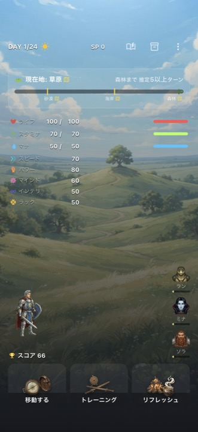
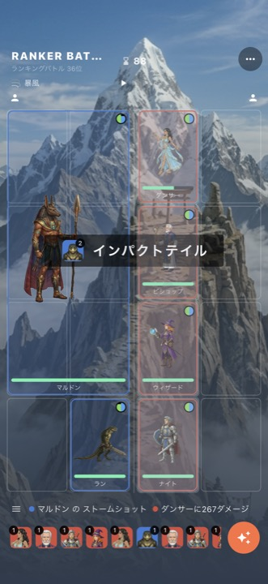
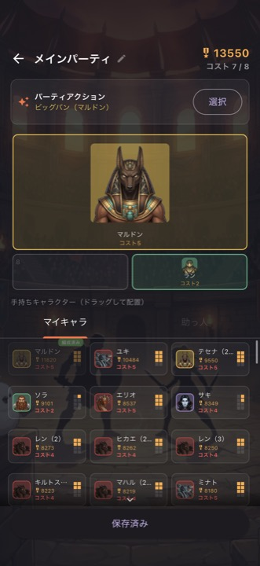
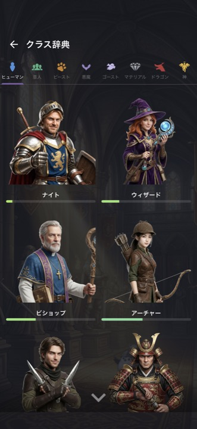
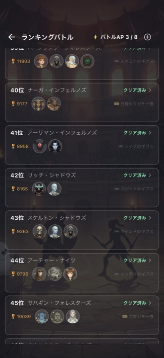
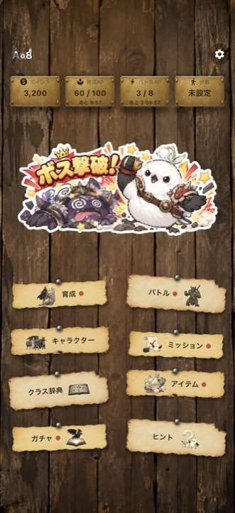
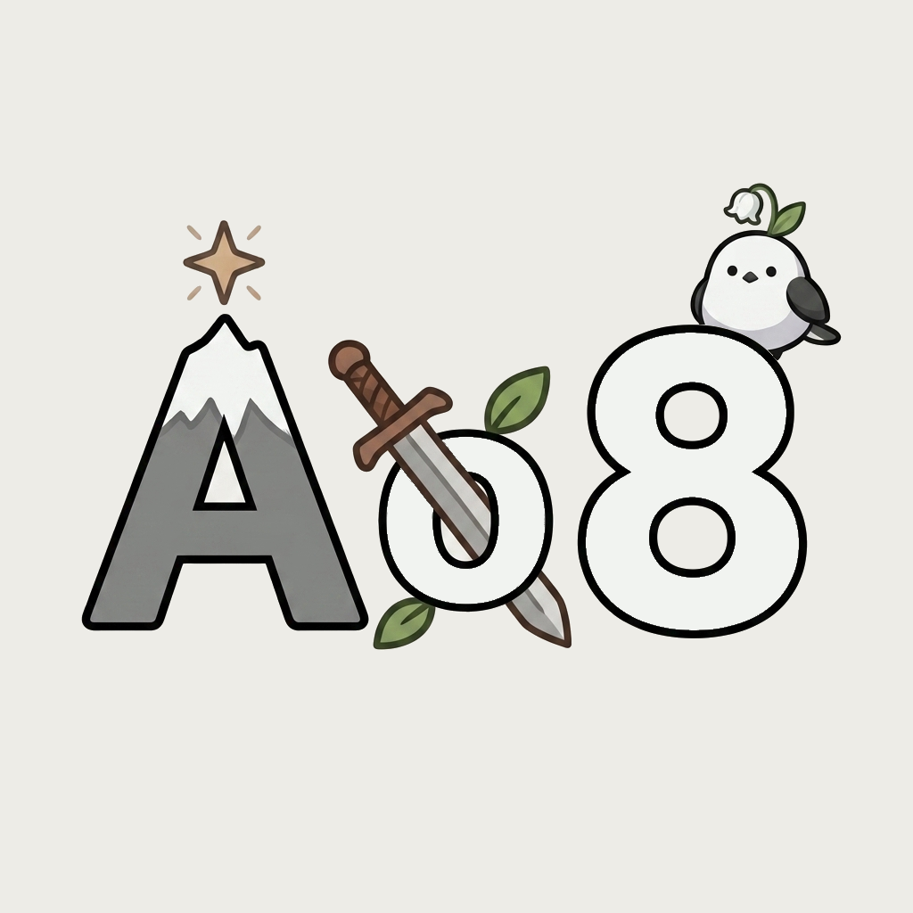

プレスキット
報道関係者の方向けの資料です。最終更新：2026年11月13日
本ページの文章・画像は、『Apex of 8』を紹介する記事、および記事を紹介する媒体公式SNSでご自由にお使いいただけます（ご利用にあたって）。
資料のダウンロード
- プレスリリース（press_release.txt）
- 画像の説明・著作権表記（captions.txt）
- 画像は下の一覧から、1枚ずつ元のサイズでダウンロードできます。
製品情報
| タイトル | Apex of 8（エーペックス・オブ・エイト） |
|---|---|
| ジャンル | 育成シミュレーションRPG |
| 配信開始日 | 2026年11月13日 |
| プラットフォーム | iOS（App Store） |
| 対応OS | iOS 15.0以上 |
| 配信地域・対応言語 | 日本・日本語 |
| 価格 | 基本無料（アプリ内課金あり） |
| 広告 | あり（任意で視聴するリワード広告） |
| 開発・配信 | myoko（個人開発） |
| App Store | https://apps.apple.com/jp/app/id6827018106 |
| 公式サイト | https://m-yokom.github.io/ao8/ |
| 公式X | @ao8_myoko |
紹介文
ひとこと（30字程度）
8種族×8クラスの戦士を育て、頂点を目指す育成RPG。
短い紹介（100字程度）
8種族×8クラス、64通りの戦士候補を24日間の旅で育て上げ、装備や陣形、作戦を組み合わせたパーティでランキングの頂点を目指す育成シミュレーションRPG。ランキングの相手はすべてゲーム内のパーティで、他のプレイヤーと競わず自分のペースで遊べる。
紹介（300字程度）
『Apex of 8』は、8つの種族と、種族ごとに8つのクラスから戦士を育て、ランキングの頂点を目指す育成シミュレーションRPGです。島をめぐる「洗礼の旅」では、限られた24日間で、どの力を伸ばし、どの道を進むかを選び、世界にひとりだけの戦士を育て上げます。育てた戦士からコストの範囲内で最大4人のパーティを組み、前衛と後衛の並び、技の順番、作戦、鍛え上げた装備を組み合わせて、格上の相手に挑みます。ランキングの相手はすべてゲーム内の強豪パーティで、他のプレイヤーと順位を争うことはありません。頂点の1位にたどり着いたとき、物語は結末を迎えます。
特徴
- 8種族×8クラス、64通りの戦士候補：得意なことも、伸び方も、戦い方もクラスごとに異なる。
- 24日間の旅で育成：トレーニングと進む道の選択で、ひとりの戦士をかたちづくる。育てた戦士は次の旅の仲間になる。
- 陣形と作戦で格上を倒す：コストの範囲内で最大4人のパーティ。前衛・後衛、技の順番、作戦、装備の組み合わせ。
- 他のプレイヤーと競わない：ランキングは100位から1位まで、相手はすべてゲーム内の強豪パーティ。
- ゴールのある育成：頂点の1位にたどり着くと、物語は結末を迎える。
- すき間時間でも育つ：歩数が戦士の経験値に。探索や修行はアプリを閉じている間も進む。
- 課金しなくても最後まで：課金は育成を早めたい人のための選択肢。
- すべてが「8」：種族・クラス・パラメータ・属性・育成エリア・レアリティなど、ゲームの要素を「8」で組み立てている。
画像
画像を押すと、元のサイズで開きます。ゲーム画面はiPhoneの縦画面のため、元の縦横比のまま提供しています。
01_key_visual.jpg（1672×941）


02_journey.jpg


03_battle.jpg


04_party.jpg


05_classes.jpg


06_ranking.jpg


07_home.jpg
ロゴ・アイコン
08_logo.png


09_icon.png

ご利用にあたって
- 本ページの文章・画像は、本作の紹介記事、および当該記事を紹介する媒体公式SNSでの掲載にお使いいただけます。
- 拡大縮小・レイアウト上のトリミングは可能です。内容を誤認させる改変はお控えください。
- 著作権表記：© 2026 myoko
お問い合わせ
取材・資料のご依頼などは、次のメールアドレスまでお送りください。
myoko：ao8.myoko@gmail.com